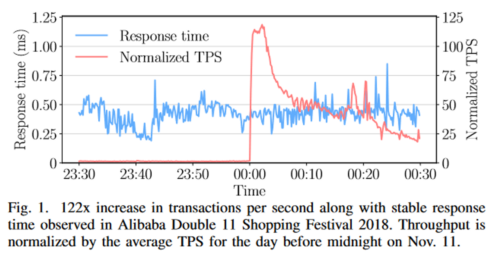
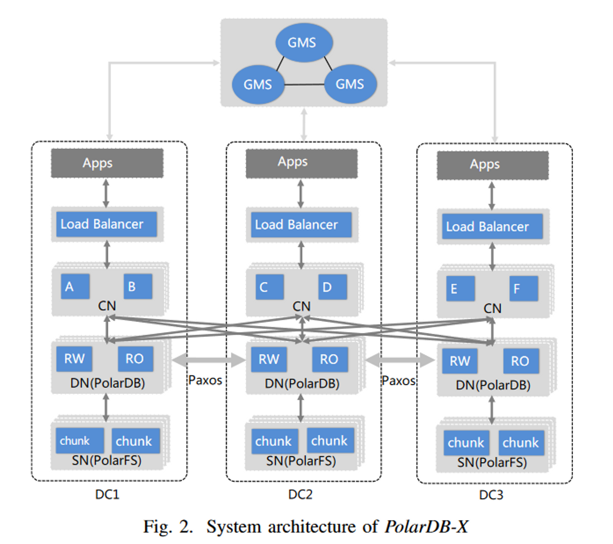
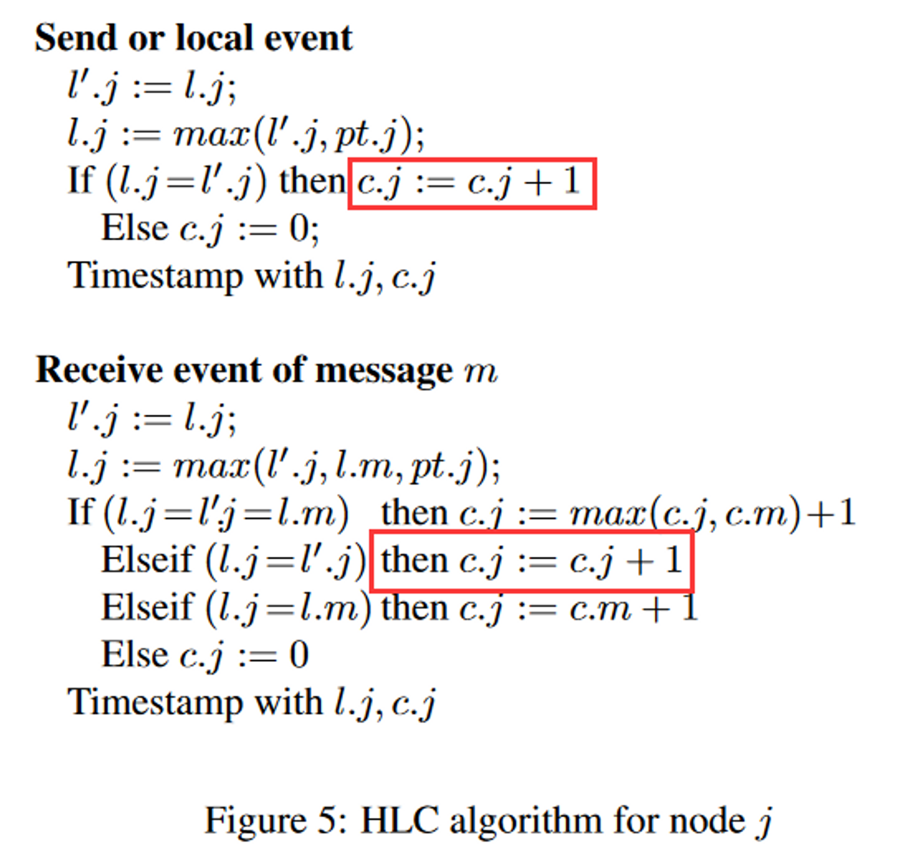
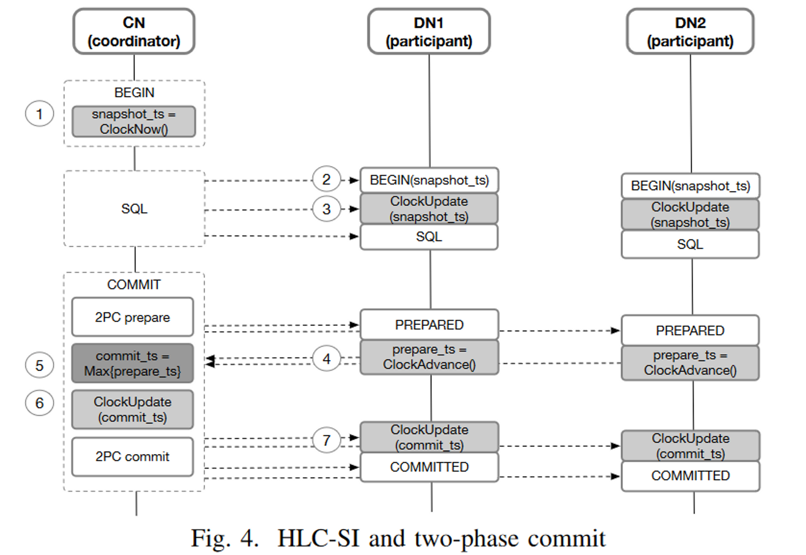

这篇文章密密麻麻列了二十来个作者，一看就是厨艺界的米其林，DB 界的国家队，让我看看到底做了些啥。
Why
虽然在大公司里开坑似乎不需要严谨的理由，大家总是可以装模做样的造些需求，但我们还是来看看文章说的需求有没有亮点。
- multi-datacenter deployment，容灾的要求
- the separation of computation and storage，更快的 scale up 速度，也是降低成本的一部分
- 利用 HTAP 降本增效

对于存算分离，论文用双 11 的流量作为例子，在流量上升 122 倍时仍然能够维持稳定的延迟，但是传统数据库想要做到这一点就需要提前扩容到百倍规模，在这种场景下，即使是提前数周也会造成巨大的资源浪费，那么云数据库能做到多少时间完成扩容呢？
每一个数据库都有一统天下的 HTAP 梦，我泼辣人岂是咸鱼，在阿里云原生的加持下，HTAP 志在必得。
How
在这个年代做数据库就像烧菜，你不必从研究野生的香辛料或是如何种地畜牧开始，只需要购买合适的食材，用正确的工序，做出符合顾客口味的菜肴来即可获得大厨的美誉。一起来看看顶级厨师团队的选择。
- HLC-SI，TSO 会产生跨 data center 的延迟，这会使得延迟升高，吞吐降低。我觉得延迟升高可以理解，但是为什么会吞吐降低，这点延迟不是资源使用带来的，因此只要加并发，就可以获得一样的吞吐。除非这是一个有冲突的 workload，会产生等锁排队的情况。
- 云原生的弹性，只需要分钟级的时间就可以增加一个 read only 节点，write 节点呢？为了更好的弹性，PolarDB-X 还做了 multi tanent，看起来 multi tanent 和 read/write nodes 是正交的？为什么不给 tanent 绑定 nodes 呢？PolarDB-X 的弹性有多好，文章给了一个例子，160M 行共 40GB 的数据翻倍用了 4-5 秒，这个说法比较抽象，因为他并没有说 node 的数量，并且 40GB 过于小了。我们一般认为扩容只是增加了存储容量上限而不改变实际的数据，如果只是增加一下存储的容量，那似乎不是一件难事。
- HTAP，PolarDB-X 的优化器根据代价判断这是一个 TP 查询还是一个 AP 查询，实际上这里的难点是维护准确的统计信息以保证代价的准确度，但是统计信息维护这种细节就像 “加入少许 MSG” 一样属于行业秘密。PolarDB-X 用一个单独的线程池来执行 AP 查询，并且为他们设置 quota，反正不要让 TP 查询等 CPU 等太久就成。
大厨做菜当然从前菜到甜点一个不落，说架构之前，我们先来报菜名：
- Global Meta Service (GMS)，存了数据之外的所有东西，负责调度
- Load Balancer，提供一个接入点，就近转发 SQL
- Computation Node (CN)
- Database Node (DN)
- Storage Node (SN)
看我们的大餐多丰富，隔壁 G 家天天喂 BigTable 是不是已经吃腻了。

看架构和隔壁铁 DB 还蛮像的 🐶。
不过架构图也就随便一糊，更重要的是里面的每个节点承担了什么功能，如果某个性能受限的地方背负了它不能承受的负载，那整个系统就会出现瓶颈。
GMS
It manages the system’s metadata, such as cluster membership, catalog tables, table/index partition rules, locations of shards, and statistics.
我感觉这个设计是图省事，把所有的东西都往 GMS 里面丢，试想一下 GMS 能不能管理一百万张表的信息？如果 GMS 的定位和 etcd 类似，那是很容易遇到性能瓶颈的。
Load Balancer
就近转发是很正常的思路。看到这里我有个问题是这里的 Load Balancer 是否能够配合 CN 完成平滑升级？比如 DC1 的 Load Balancer 下面有 3 个 CN，在升级 CN 重启进程的时候，连接必然会断开，这里最好能做到：
- 在连接待升级的 CN 的事务结束后将后续 SQL 转发到同 DC 的其他 CN
- 在待升级的 CN 上的连接全部被驱逐后重启
- 所有 CN 滚动升级
把这些做了，这个 Load Balancer 才能称得上 cloud native。
如果还有什么可以做，那我想这个 Load Balancer 能不能把 timestamp 给分配了，这样在一个 DC 内至少是有类似 TSO 的效果的。
Computation Node
CN 里面有 distributed transaction coordinator，parser，cost-based 优化器和执行器，这些都是很常规的配置，但是把优化器的 cost 做准确却不容易。
听起来 CN 是几乎没有状态的，那么 CN 层的扩展会非常容易。
Database Node
既然实际的数据还是存储在 SN 上，那为什么还需要 DN 这一层？我感觉是有些历史原因，原本的PolarDB 是一写多读的架构，这里的 DN 就是原本的 PolarDB，里面能有一个 RW 节点和多个 RO 节点。相比于 RDS 的优势里，write scale 是决定性的一点，增加 DN 的数量就可以 write scale，而增加一个 DN 中 RO 节点的数量就能够提供更多的读资源并且不影响 RW 节点。
Storage Node
其实就是 PolarFS 啦，他有几个特点：
- 持久化
- 原子性
- 水平扩展
一个 SN 下面可以挂一个 volumn，最大容量 100T，可以以 10GB 为单位扩缩容。能挂到 100T 的容量这点很强，和 EBS 比较一下，如果没有 io2 express，单 volumn 只能扩展到 16T，但是 io2 可以以 4GB 为单位扩算是一点数据库用不上的优势。这里的好处是如果你的数据很多，但是计算量很少，PolarDB 可以一个 SN 挂 100T，EBS 用户需要 7 个节点才能挂 100T，如果实际上不需要 7 个节点的计算资源，那就是浪费了。
Each chunk has three replicas in each datacenter and linear serializable is guaranteed through Parallel Raft, which is a consensus protocol derived from Raft.
DN 这层已经复制了一次了，FS 层还要复制一下，上面用 Paxos，这里用 Raft，什么杂技团。再回想一下 BigTable，那是真简单粗暴，往里面写就行，可靠性是 BigTable 的事。
Misc
Partition
这个问题比较重要，在 auto increment 的 key 上我们经常遇到热点问题，但是 PolarDB-X 把 unique key 都做了 hash partition，这样 bulk insert 不会产生热点，但是代价就是 range scan 的时候要扫多个分区。
为了减少分布式事务，global/local index 和 clustered/non-clustered index 都做了，用户你看着选吧嘿嘿。
分布式读写都是个很讨厌的东西，因为延迟一定高，当一个事务涉及到多表时，我们也想尽可能的不要产生分布式读写，PolarDB-X 用 table group 让多个表使用同样的 partition 规则，这样就有机会在多表操作时依旧能够本地搞定。比如原本涉及到两个 shards 的写就会变成分布式事务，涉及到两个 shards 的读就只能在 CN 上 join。
RW 与 RO 一致性
在 DN 中，当一个 RW 节点不能够提供足够的读能力时，就需要增加 RO 节点，RO 节点的数量没有明确的限制。
RW 和 RO 都是从 SN(FS) 中读取数据，所以需要同步的就是 redo log 中还未刷到 SN 里的东西，换一种说法，RW 节点的 redo log 被存在他自己的 buffer pool 里，这部分要同步给 RO 节点，RO 节点才能正确的 serve 读请求。这个问题不难，RW 节点需要等对应的 LSN 被同步到所有 RO 节点后才能够提交事务。
Replication
PolarDB-X 说他们在 DN 之间用 Paxos 来同步，其中加入了一个叫 Logger 的角色，只复制日志但是不回放，也不会成为 Leader。
Unlike in Aurora, to achieve extremely low storage I/O latency (via RDMA), our cross-datacenter data replication is not achieved at the SN layer, but at the DN layer.
为了降低延迟，复制不放在 SN 层来做，放在 DN 层，这里我感觉和延迟无关，复制本身的延迟在哪都是一样的，但是放在 DN 来做方便处理 redo log（SN 只是个 FS 不知道啥是 log）。另一种猜想是PolarFS 在产品上不支持这种跨 DC 复制的需求，只能放在 DN 里做。
另外与 Raft 不同，PolarDB 支持异步 commit，是正统 Paxos。为了降低延迟排队，做了 pipeline 和 batch。做了异步 commit 和 pipeline 的代价就是恢复的时候会比较麻烦，在切 leader 时旧 leader 需要清理掉已经 apply 的脏页。我觉得这部分挺重要的，但是文章没有讲的很详细。
Transaction
单点授时的 TSO-SI 可以提供严格单调递增的 timestamp，但是有两个潜在问题：
- 单点 failure，为了性能，分配 timestamp 的 node 肯定是需要有 leader lease 的，TiDB 的 PD 的 lease 默认是 2s，也就是说，在分配 timestamp 的 node 掉线后，最多需要 2s 才能够选出新的 leader 来继续分配后续的 timestamp。
- 单点的性能瓶颈，这是可以通过一次申请多个 timestamp 来优化的，但确实是一个理论上的瓶颈点。
PolarDB-X 使用了 HLC，其中有 16 位的逻辑位，也就是每毫秒 65535 的吞吐。
Each node in the cluster has a local physical clock $node.pt$ in millisecond, and also maintains its own HLC timestamp $node.hlc$.
我觉得一个 DC 用一个 HLC 更加好，这样保证 DC 内部的 timestamp 是单调递增的，也减少很多 uncertain windows。
回到 PolarDB-X 的 HLC，它还提到了一些优化方法，在 HLC 的论文中，当物理时间相等时，是需要将逻辑时间 +1 的（如下图），但是这样会浪费 16 位的逻辑时间，所以泼辣DB-X 不加了，接受更多的重复 ts。

另外如果尝试频繁的用 piggyback 的 ts 来校准自己的时间，固然会使得时间更准确，但也会有性能问题，即使是个原子变量，频繁的进行 CAS 操作也不好的，最坏的情况下可能让缓存失效。为了解决这个问题，PolarDB-X 会减少 update 的次数，例如在分布式事务中只对返回的最大的 ts 去 update。
When the participant encounters a transaction in PREPARED state that modifies the data in its read set, it needs to wait for the transaction to complete.
如果这个事务的 commit 特别慢，一直等着不是一个好策略，理论上可以通过检查事务状态来判断是应该忽略这个 PREPARED 记录还是读到它。

事务提交是熟悉的两阶段，commit_ts 是选择了 max{prepare_ts}。对于 SI 特性，论文里给了个很简单的证明（单 DN 读），对于跨 DN 读的情况，因为读事务的 snapshot_ts 也会推进 DN 的 HLC，并且它一定和 commit_ts 有严格的大小关系，所以也是成立的。
这里还有一个遗留问题，我们之前提到了 DN 内是可以一写多读来提升读能力的，如何同步 RW 节点和 RO 节点之间的 HLC 时间？如果读事务推高了 RO 节点的 HLC 却没有管 RW 节点的，那么写事务在 RW 节点上进行的时候就可能使用一个更小的 timestamp，导致 SI 被破坏。一个简单的想法是 HLC 全部由 RW 节点来管理，并且 RW 节点负责转发 RO 节点的请求。
Multi Tenancy
这种架构复杂的数据库有一个问题就是初始集群需要的节点就很多，十多个节点是基本规模，每个节点的配置还不能差，你要是整个 2c4g 的机器跑，长尾能上天。这样一来，所谓的分布式数据库不就曲高和寡了嘛，所以不得不搞多租户。
一个 DN 内是单写的，但是租户之间的隔离使得不同的租户可以用不同的 RW 节点，消除写入瓶颈。在实践中，为了支持跨租户事务，会将租户绑定在某个 RW 上，在同一个 RW 上的租户直接的跨租户事务是安全的。但是提供友好的用户接口会比较难，因为对于用户，DN 和 RW 都是隐藏概念，每个 DN 内都有多个 RW 节点，比如 DN1 里有 RW1 和 RW2，DN2 里有 RW3-5，这时候想要绑定 RW1 和 RW3 该如何操作？
因为有一个强约束是 tenant 只能帮顶一个 RW，所以要切换的时候，需要暂停业务，等旧 RW 上的 DML/DDL 结束，才能把查询往新 RW 发，如果这里面有个大事务或者大 DDL 感觉挺糟糕的，喵喵喵？
HTAP
在 PolarDB-X 里，TP 和 AP 查询是共用一个接入点的（共用 CN），CN 节点根据执行代价的估算结果判断这是一个 TP 查询还是 AP 查询，
对于稍微大些的查询，如果把结果都拿回 CN 节点来算会消耗大量的带宽，因此 PolarDB-X 也做了下推，虽然它说能推到 “storage node”，但是 SN 是 FS 层，究竟有多少计算能力，实现了多少算子其实是个问题。
资源隔离做得不好的话，一个大 AP 查询能让所有的 TP 业务都超时，论文比较详细的说了他们是怎么做隔离的：
- TP 线程没有资源限制
- AP 线程用 cgroups 限制总时间
- 分了几个线程池：TP Core Pool, AP Core Pool, Slow Query AP Core Pool
- 这里根据名字来理解一下就行了
- 如果一个 TP 查询很慢，他可能是被误判成 TP 类别的，会把它放到 AP Core Pool 中去
- 不看名字可以理解为优先级递减的三个线程池
- 内存分为四部分管理，一个细节是 TP 能占用 AP 的内存直到查询结束，但是 AP 需要立即释放占用的 TP 内存（当 TP 需要时），这也是保护 TP 业务的手段之一。
在维护列索引的时候，他们用了一种延迟更新的方案，也就是 AP 的查询不是真正的 realtime，可能有一点延后，但因为 AP 查询对延迟不敏感，让查询多等一会就可以了。
Conclusion
看这种工业 DB 的论文就是大而全的感觉，细节讲的不深，实际上论文里一句资源隔离做起来就是天大的工作量，有些看的时候的疑问，说不定实践里都有解决。另外阿里云原生就是比云原生要好用，词条长就是厉害啊。
DN 层有完备的执行引擎，这点是很方便的，可以轻松的拆分计划下发。原本 PolarDB 一写多读的架构在通过将 coordinator 移到 CN 层知乎，去除 write 单点的问题，RO 节点变成扩展读能力的工具，可谓是变废为宝。
将近看完的时候才想起来 PolarDB-X 是有开源的，大家也可以多多关注开源动态：